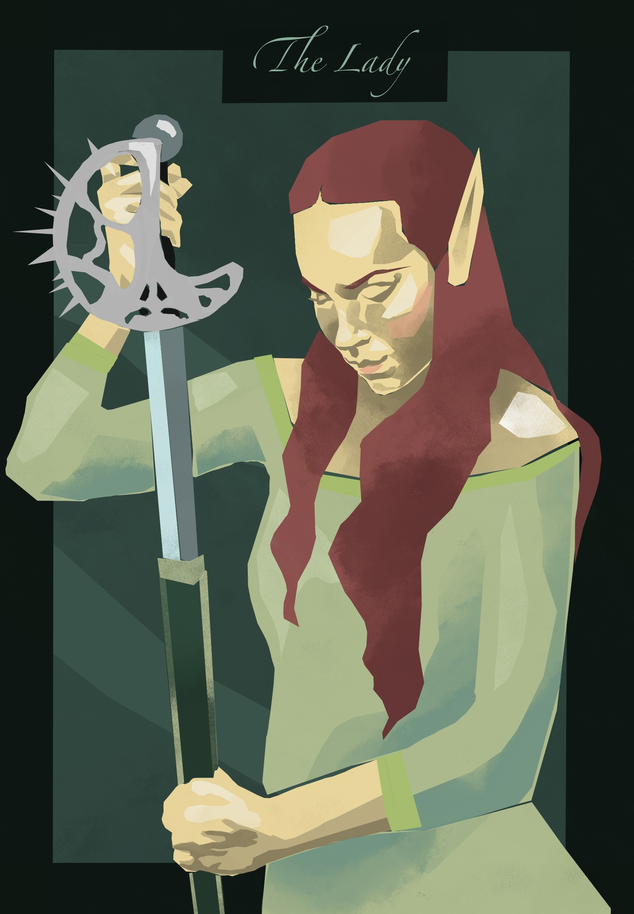

The Lady
Every great Altmer bloodline is said to produce something critical to Altmer society. Elegance, competence, and aesthetics were taken for granted in such lineages; or rather, ensured through careful pairings and generous culls. Morimacil Levoline, born without access to Aetherial energies, was a spectacular exception to this practice.
She was raised in the crystal libraries of her house, where she learned the trade of bookkeeper. A mundane title in any other society, the bookkeepers of Morimacil were renowned codebreakers, diplomats, and spies. Despite her deficiency in the arcane arts, Levoline excelled in the trade of her forbears.
What magical skill she could not replace with espionage, she mitigated through her mastery of the blade.
Her sword, a rapier of fine ebony, was named Thorn.